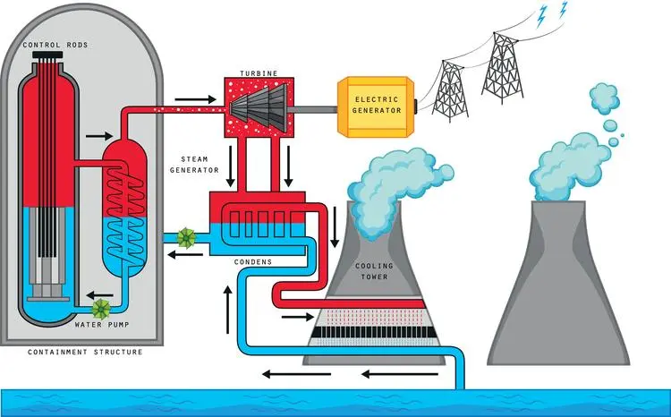
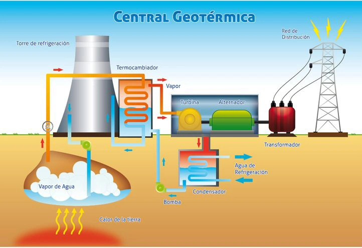
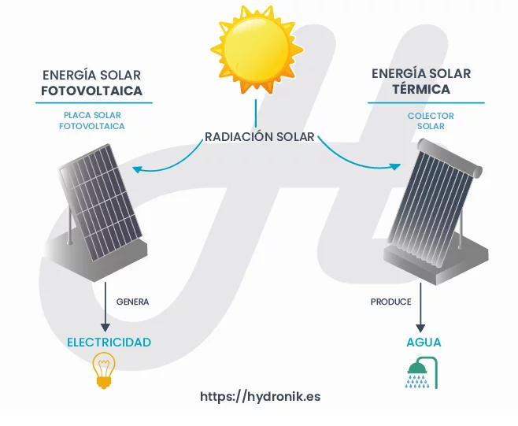
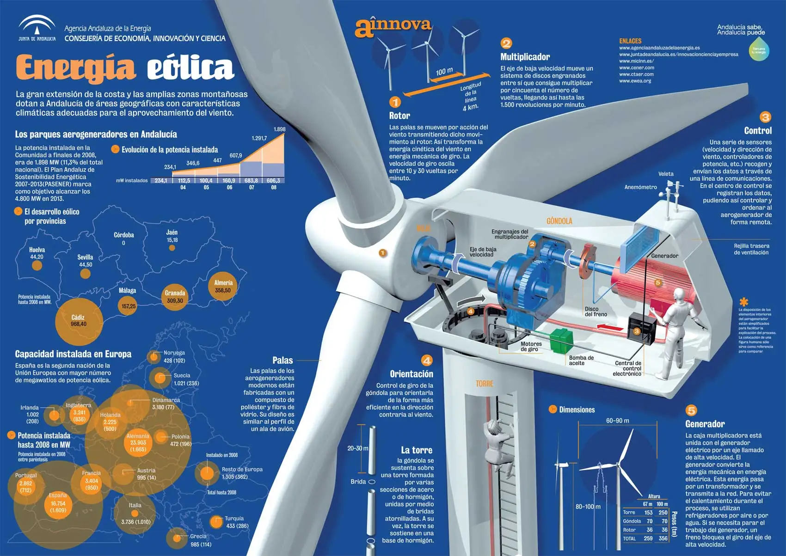
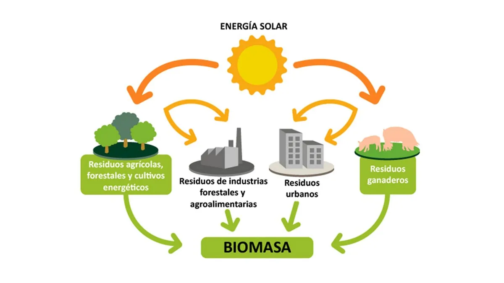
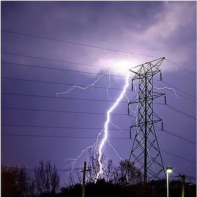
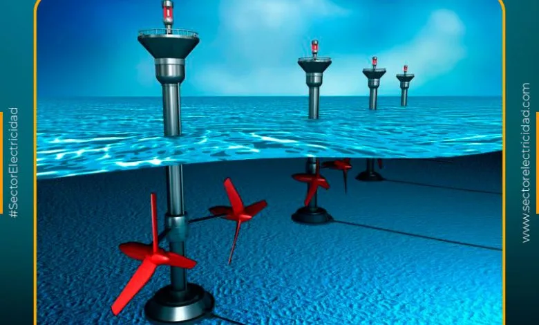

Energía. Es la capacidad que posee un cuerpo de realizar un cambio en la posición de otro cuerpo o un cambio en la forma de un objeto. En otras palabras es la capacidad que tiene un objeto de realizar un trabajo.
Tipos de energia
Todos los cambios y transformaciones que ocurren en la materia están acompañados por cambios en la energía. En términos sencillos la energía se define como la capacidad que posee un cuerpo para producir trabajo. Expliquemos esto con algunos ejemplos: cuando una persona sube un tramo de escaleras, para lo cual gasta una determinada cantidad de energía, se realiza un trabajo. La mezcla de hidrocarburos que integran a la gasolina posee en sus enlaces una buena cantidad de energía química, que se aprovecha para realizar un trabajo al mover un vehículo, la energía potencial que posee el agua almacenada en una presa desarrolla un trabajo cuando se deja caer sobre las turbinas para generar electricidad. El Sol envía a todo el sistema solar cantidades muy grandes de energía luminosa y calorífica, que es aprovechada de muchas maneras por los seres vivos, y el ecosistema en general, para producir vida y, en última instancia, trabajo.
Básicamente, existen dos tipos de energía:
Energia cinetica
La energía cinética es aquella que posee un cuerpo debido a su movimiento, a mayor velocidad de movimiento, mayor cantidad de energía cinética. La energía cinética la podemoscalcular mediante la siguiente fórmula:
\(\displaystyle E_c=\frac{1}{2}\cdot m\cdot v^2\)
Energía potencial
Es aquella que posee un objeto debido a su posición dentro de un campo de fuerzas. Por ejemplo, para un objeto situado en el campo gravitacional terrestre se utiliza la fórmula siguiente para calcular su magnitud:
p
E = mgh
\(\displaystyle E_p=m\cdot \vec{g} \cdot h\)
Manifestaciones de la energía
La energía tiene múltiples manifestaciones y propiedades que las hacen distinguirse unas de otras. A continuación describiremos brevemente algunos aspectos significativos de varias de ellas.
Energía química
Es aquella energía que se encuentra “almacenada” dentro de los enlaces que presentan los átomos al integrar un compuesto determinado. Ejemplo, los combustibles fósiles que poseen la singular propiedad de desarrollar reacciones exotérmicas con cierta facilidad.
Energía calorífica
Se define, como energía en tránsito, que fluye de un cuerpo caliente a otro de menor temperatura. En los cambios de estado su participación es ineludible. Cuando se desarrollan las reacciones químicas también tiene una importante participación, ya sea que se genere calor o se absorba calor durante su desarrollo.
Energía hidráulica
Se obtiene principalmente de las caídas de agua. La energía potencial que posee el agua almacenada en presas o en lagos es utilizada para transformarla, en energía mecánica y luego en eléctrica.
Energía nuclear
Es aquella que está contenida en el núcleo atómico. La energía nuclear es transformada en las centrales nucleares, primero en energía calorífica y posteriormente, en energía mecánica y eléctrica. Para ello se utiliza principalmente el proceso de fisión nuclear, que consiste en bombardear un átomo pesado con neutrones, hasta que se rompe o se fisiona, liberando en el proceso una enorme cantidad de energía. Además de la fisión nuclear se está experimentando con el proceso de fusión nuclear. Como su nombre lo indica, es un proceso que en lugar de destruir nucleos atómicos, los une. Con ello se logra la producción de cantidades de energía superiores a los que se obtienen con la fisión.

Energía geotérmica
El núcleo de la Tierra conserva una temperatura muy alta. En ocasiones se forman los llamados “pozos geotérmicos”, que no son otra cosa sino formaciones rocosas que han atrapado agua. Esta agua se calienta y puede presentarse en forma de vapor, en forma de vapor-líquido o, posiblemente, en forma de un líquido caliente.

Energía solar
El Sol emite a cada instante cantidades importantes de radiación luminosa y calorífica. Desde hace algún tiempo se han estado construyendo “colectores” para aprovechar esta radiación, se ha demostrado que la energía solar puede aprovecharse para producir energía eléctrica y mecánica.

Energía eólica
Se aprovecha la fuerza del viento para generar energía eléctrica, donde hélices de un tamaño colosal son movidas por el viento, y mediante la ayuda de generadores apropiados, proveen de electricidad.

Biomasa
Se describe frecuentemente como una sustancia orgánica, renovable, de origen animal o vegetal. La radiación solar que llega al planeta es la fuente de energía que contiene la biomasa. Los vegetales, a través del proceso de la fotosíntesis, captan, transforman y almacenan la energía en algunos compuestos. El reino animal incorpora, transforma y utiliza esta energía. De este proceso se obtienen algunos subproductos que, transformados en biomasa, pueden ser aprovechados como combustible en diversos aprovechamientos energéticos.

Ademas de otras manifestaciones como la energia electrica, mareomotriz, etc.


Ley de la conservación de la energía
Sin importar que tipos de cambios se den en la energía se cumple la siguiente ley:
"La energía no se crea ni se destruye solo se transforma"
Ley de la conservación de la materia y la energía